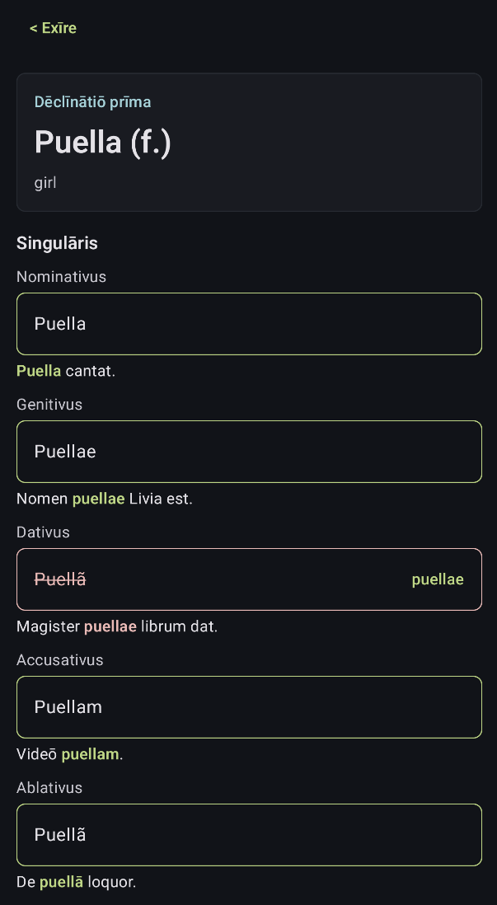

Declension sets
Choose from first through fifth declensions and practice from an offline noun pool.
Gnipho presents
This Android study app will help you practice Latin noun forms offline. It comes with usage examples and macron-awareness.
Built for repetition
Choose from first through fifth declensions and practice from an offline noun pool.
Answers are graded immediately, with example sentences that reveal the practiced form.
Accent-like vowel input is normalized while keeping correct Latin forms visible.
Screens
